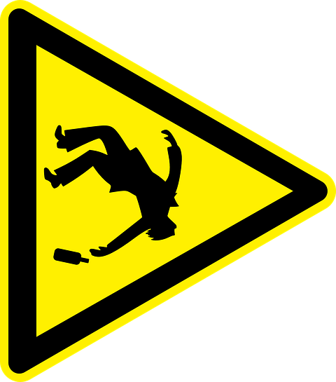

Fermented drinks
Beer
Classification
Types
Ale
Lager
Malt
Stout
Styles
Amber
Blonde
Brown
Cream
Dark
Pale
Strong
Wheat
Red
Ipa
Lime
Pilsner
Golden
Fruit
Honey
History
Beer Map
Curiosities
Cyder
Types of cyder
History
Cyder Map
Mead
History
Pulque
History
Wine
Types of wine
History
Wine Map
Distilled drinks
History
Types of liquor
Whiskey
Irish Whiskey
Scotch Whiskey
Japanese Whiskey
Canadian Pot Still Whiskey
Bourbon Whiskey
Tennessee Whiskey
Corn Whiskey
Blended Whiskey
Single Malt Whiskey
Țuica
Brandy
Cachaça
Gin
Rum
Schnapps
Tequila
Vodca
Liqueur
Sambuca
Health effects
Short-term effects
Long-term effects
Congeners
Amount of use
Map
Reasons for use
Various reasons
Cooking with alcohol
Alcohol measurement
Alcohol concentration
Serving measures
Shot sizes
Serving measures
Laws
General History
